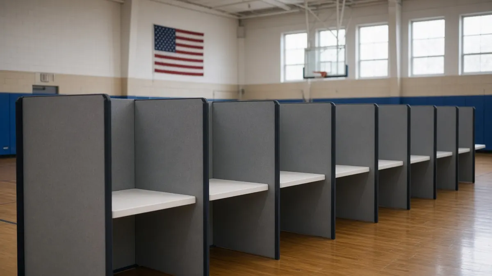

Sources linked. Allegations are labelled as allegations. Verify with the original source.
⏱️ · First published 2026-10-20
🏛️ Politics › Early voting 2026
Early voting 2026

By The Trends Incoming team
Early voting for the Nov 3 midterms opens in Hawaii, Louisiana, Utah and Wisconsin on Oct 20, with West Virginia, Delaware, Maryland, Michigan, New Jersey and New York close behind. Start dates, registration deadlines and how to find your polling place. Strictly nonpartisan.
What's trending in Early voting 2026
Midterms: 8 days out
Every House seat, 35 Senate races and 36 governor races are on the ballot Tuesday, Nov 3. Early voting is underway in many states, and dates differ by state, so check your own before you go.
The quick version
Early voting for the November 3, 2026 midterms is opening in more states this week. In-person early voting starts today, Tuesday, October 20, in Hawaii, Louisiana, Utah and Wisconsin, then West Virginia on Wednesday, Delaware and Maryland on Thursday, and Michigan, New Jersey and New York on Saturday, October 24. Hours and locations vary by state and often by county, so confirm with your state or local election office before you go.
| Election Day | Tuesday, Nov 3, 2026 |
|---|---|
| On the ballot | All 435 House seats, 35 Senate seats and 36 governor races, plus state and local contests |
| Early voting starts Oct 20 | Hawaii, Louisiana, Utah, Wisconsin |
| Oct 21 | West Virginia |
| Oct 22 | Delaware, Maryland |
| Oct 24 | Michigan, New Jersey, New York |
| Oct 26 | District of Columbia |
| Oct 28 | Oklahoma |
| Registration deadlines this week | Idaho, Utah, Virginia (Oct 23); Massachusetts, New York (Oct 24); Colorado, Washington (Oct 26). Idaho, Utah, Virginia, Colorado and Washington also offer same-day registration |
| Mail ballot request deadline Oct 20 | Kentucky, New Mexico, North Carolina |
Dates per watch.vote's state-by-state tracker, which lists a date only after finding it in the state election office's own documents. Always double-check with your state.
How to find your early voting site
- Go to Vote.gov and pick your state to reach its official election site.
- Use Can I Vote, run by the National Association of Secretaries of State, to look up polling places and early voting locations.
- Check your county or city election office for hours. Many sites have shorter hours on weekends.
What to bring
ID rules are different in every state. Some ask for a photo ID, some accept other documents, and some only ask for your name and address. Your state election site lists exactly what counts. If you're voting by mail instead, check the return deadline and whether your ballot must arrive or just be postmarked by Election Day.
Strictly nonpartisan: this page explains how and when to vote. We don't endorse candidates, parties or ballot measures.
Keep reading
- Elections 2026: the races to watch
- Shutdown deadline: Dec 11, key dates and FAQ
- Congress and the lame-duck to-do list
- Supreme Court: this term's cases
- Midterms 2026, explained
- Everything trending in politics
Follow the conversation
Quick answers
When does early voting start for the 2026 midterms?
It depends on your state. It starts October 20 in Hawaii, Louisiana, Utah and Wisconsin, October 21 in West Virginia, October 22 in Delaware and Maryland, and October 24 in Michigan, New Jersey and New York. Several other states started earlier. Check your state election office.
When is Election Day 2026?
Tuesday, November 3, 2026.
Can I register to vote during early voting?
In some states, yes. Colorado, Idaho, Utah, Virginia and Washington, among others, offer same-day registration during early voting and on Election Day. Other states have deadlines before early voting starts.
Does every state have early voting?
Most states offer in-person early voting. A few, like Mississippi, only allow in-person absentee voting for voters with a reason listed in state law.
How do I find my early voting location?
Start at Vote.gov to reach your state's election site, or use the Can I Vote polling place lookup from the National Association of Secretaries of State.
We cover politics neutrally: sourced facts, both sides represented, and no endorsements. Polls are snapshots, not predictions.
Related in Holidays and Observances
- Tue Oct 27, 2026 Israel election 2026
Israel votes Oct 27: final polls and the 61-seat math, neutral. - Fri Oct 30, 2026 Hallmark Christmas movies 2026 schedule
All 34 new Countdown to Christmas premieres, Fri, Sat and Sun at 8/7c through Dec 20. - Sat Oct 31, 2026 Halloween costumes 2026
The costumes everyone is searching for this year. - Sun Nov 1, 2026 Daylight saving time ends
Fall back at 2 a.m. on Sunday, Nov 1. - Wed Nov 11, 2026 Veterans Day free meals and deals
Verified Veterans Day 2026 offers from restaurants and stores. - Fri Dec 4, 2026 When is Hanukkah 2026
Starts at sundown Fri Dec 4, ends Sat Dec 12, with a night-by-night candle chart. - Thu Dec 31, 2026 New Year's Rockin' Eve 2027: how to watch
ABC and, for the first time, Disney+ from 8 p.m. ET Thu Dec 31, with hosts and ball drop times. - Thu Dec 31, 2026 Rockin' Eve 2027 performers
Lineup tracker, updated as performers are announced. - Thu Dec 31, 2026 Times Square New Year's Eve in person
Free entry, arrival time, banned items and no bathrooms. - Thu Dec 31, 2026 Ball drop time in every US time zone
Midnight ET is 11 p.m. CT, 10 p.m. MT and 9 p.m. PT.